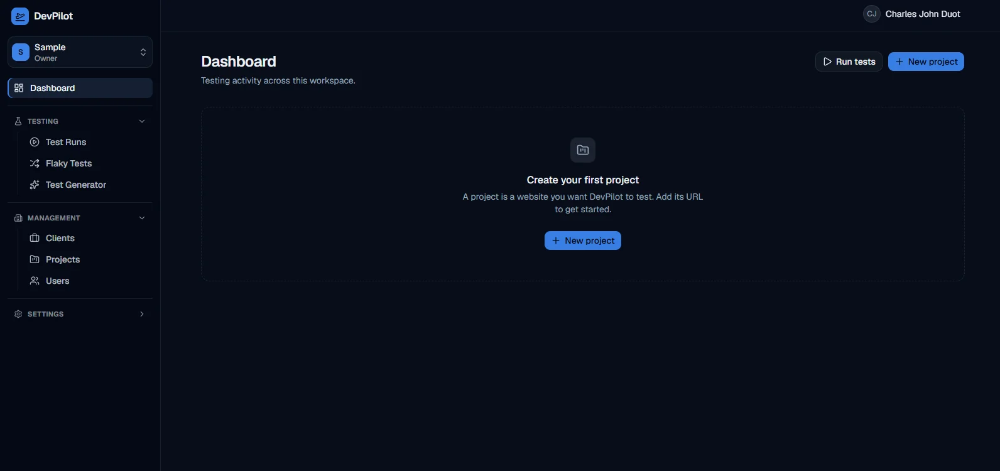

Workspace Dashboard
Workspace dashboard with a workspace switcher and role, testing tools (Test Runs, Flaky Tests, Test Generator), management screens (Clients, Projects, Users), and quick actions to run tests or create a project.
AI-assisted browser testing platform. Test smarter, catch bugs earlier, ship with confidence.
DevPilot turns plain-language test ideas into browser tests, runs them in real Chromium through a Playwright worker, and keeps every result, log, and screenshot so a team knows exactly what broke. Describe a flow in plain English and Claude drafts the test steps; every generated test is reviewed and approved before it is saved or run.
goto,
click, fill, and expect-text, validated line by
line with no arbitrary code.
The DevPilot landing page: a sample login test in the readable step language next to a smoke suite run with per-test status and durations.

Workspace dashboard with a workspace switcher and role, testing tools (Test Runs, Flaky Tests, Test Generator), management screens (Clients, Projects, Users), and quick actions to run tests or create a project.
PostgreSQL Row-Level Security checks workspace membership on every row, so teams only ever see their own data.
Tests use an allowlisted step language, and AI-generated output is validated before it can be saved.
The privileged service key stays server-side with the test worker; screenshots live in a private bucket and are shown through short-lived signed links.